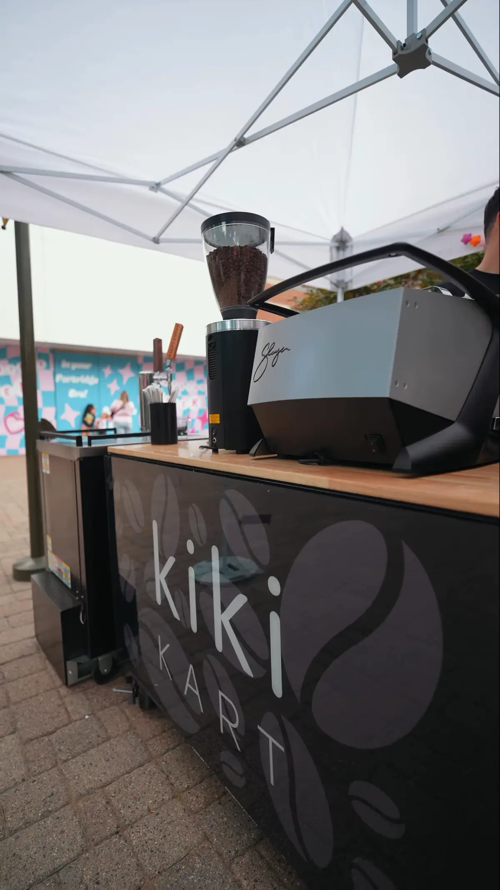
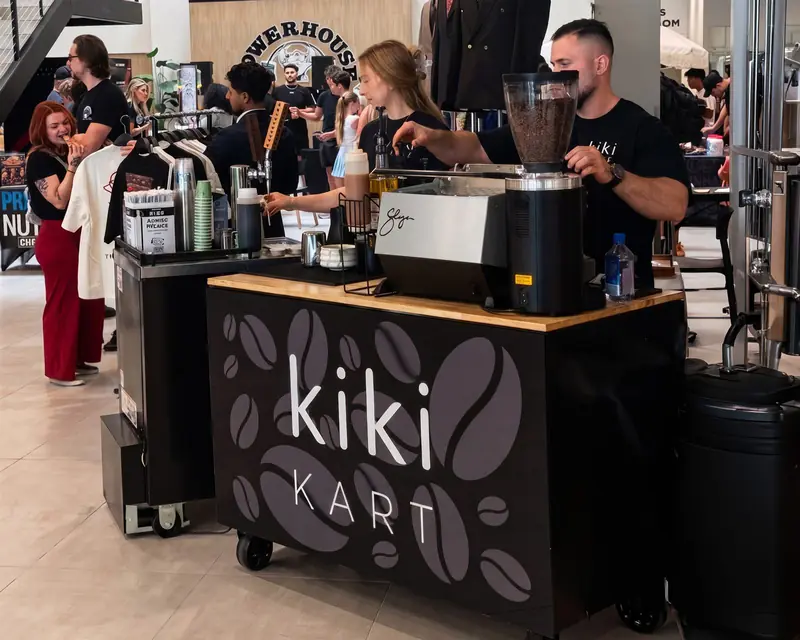
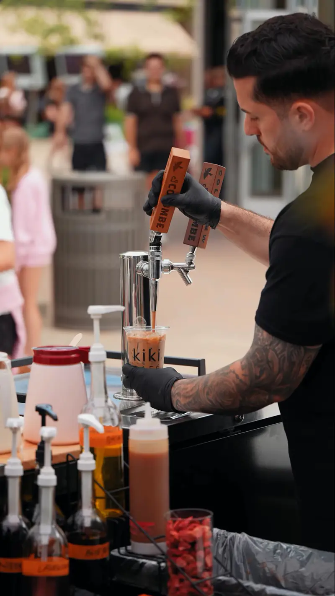
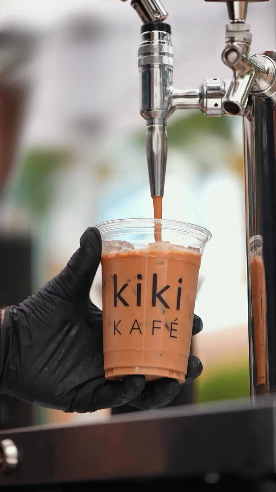
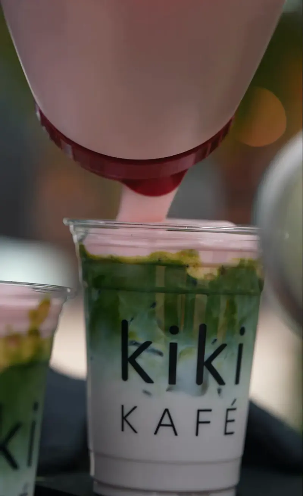
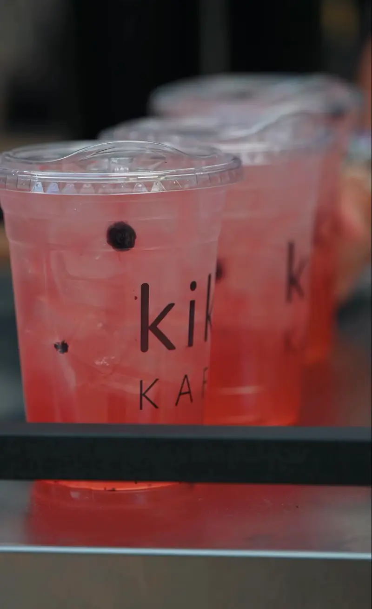
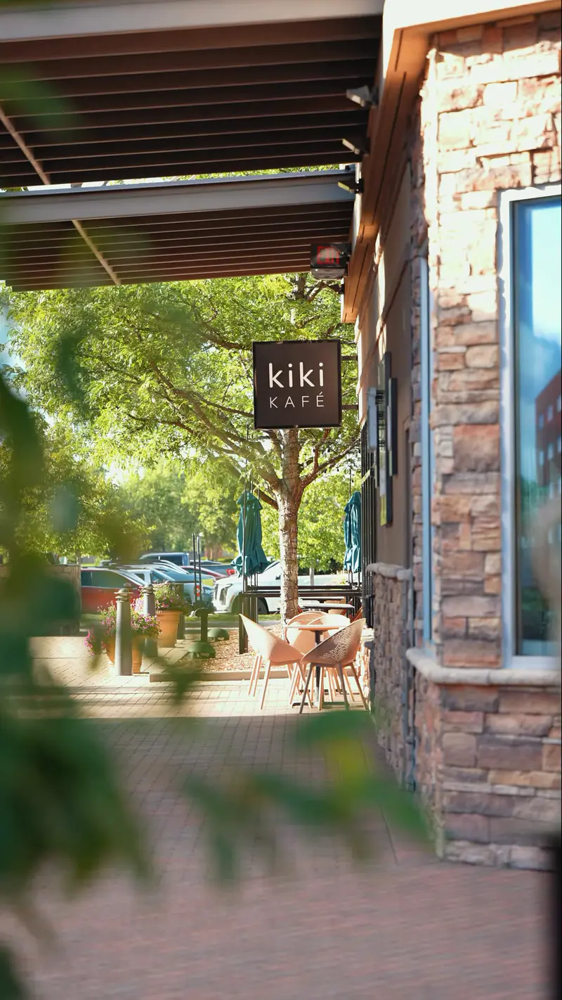

Top-Rated Coffee Cart Rental in Macomb & Oakland County

Our full barista experience, brought to your event.
- Service
- Full barista service,
drinks made to order - Included
- Equipment, setup
and breakdown - Menu
- Espresso, lattes, matcha,
refreshers, cold brew - Serving
- Weddings, showers and corporate events in Macomb & Oakland County
What it is
What is a coffee cart rental, and what does the top-rated Kiki Kart include?
A coffee cart rental puts a working espresso bar and trained baristas at your event, so guests order the drink they want instead of pouring from an urn. The Kiki Kart is Kiki Kafé's coffee cart. It is a black, branded bar with an espresso machine, a grinder and nitro taps, staffed by Kiki baristas.
Every Kiki Kart booking includes four things, in Kiki's own words: full barista service, setup and breakdown, the full drink menu, and a memorable experience, “a conversation-starting centerpiece that guests won't forget.” The menu covers espresso, lattes, matcha, refreshers and cold brew.

Where we cater
Where does the Kiki Kart cater?
The Kart starts from Kiki Kafé at The Mall at Partridge Creek in Clinton Township and takes requests from Macomb County and Oakland County. Together the two counties hold 2,159,678 residents (American Community Survey 2020–2024 5-year estimates). Put your city on the form and Kiki confirms availability for your date.
| County | Residents | Cities include |
|---|---|---|
| Macomb County | 879,853 | Clinton Township, Macomb Township, Shelby Township, Sterling Heights, Chesterfield, Utica, Mount Clemens, Warren |
| Oakland County | 1,279,825 | Rochester Hills, Rochester, Troy, Auburn Hills, Royal Oak, Novi |
Population: American Community Survey 2020–2024 5-year estimates, table B01003 for Macomb and Oakland.
Two counties
Event demand in Macomb County and Oakland County at a glance
The two counties the Kiki Kart serves: residents, high school students heading into graduation season, college students and resident workers.
| Measure | Macomb County | Oakland County |
|---|---|---|
| Residents | 879,853 | 1,279,825 |
| High school students (grades 9–12) | 45,569 | 63,543 |
| College and graduate students | 46,874 | 72,130 |
| Resident workers | 423,414 | 651,199 |
| Aged 18 to 34 | 190,732 | 273,832 |
Source: American Community Survey 2020–2024 5-year estimates (B01003, B14001, B08301, B01001).
Events
Which events book a coffee cart?
These are the event types on the Kiki Kart request form. Each one needs something different from a coffee bar.
Weddings
A coffee bar during cocktail hour or with dessert keeps guests on their feet and talking. Matcha and refreshers cover the non-coffee drinkers.
Wedding, bridal and baby showers
Daytime events suit lattes, iced matcha and caffeine-free refreshers, served in Kiki cups.
Corporate events
A barista at a conference, client day or office launch replaces the coffee urn with drinks people line up for.
Company and holiday parties
Seasonal drinks such as the fall pumpkin lineup give a holiday party its own menu.
Graduations and birthdays
Graduation open houses and birthdays draw mixed ages, so caffeine-free refreshers sit next to espresso.
Private parties
From under 25 guests to more than 200, from one hour of service to a full day.
Seen at Partridge Creek
What does the Kiki Kart look like at a live event?
In summer 2026 the Kiki Kart worked an outdoor concert at The Mall at Partridge Creek. Kiki's Instagram post of August 7, 2026 reads, “POV: You came for the concert, but stayed for Kiki.” These frames come from that video.






The drinks
What does the Kiki Kart coffee cart pour?
The Kart carries Kiki's full event menu. The table shows each drink type and who it suits at an event.
| Drink | How it is made | Caffeine | Good for |
|---|---|---|---|
| Espresso and lattes | Shots pulled to order on the Kart espresso machine | Yes | Morning events, dessert hour |
| Draft and nitro drinks | Poured from the Kart nitro taps | Yes | Fast service for a line |
| Cold brew | Served iced | Yes | Summer and outdoor events |
| Matcha | Ceremonial-grade green tea, iced or hot | Yes, green tea | Showers, guests who skip coffee |
| Refreshers | Fruit-forward iced coolers | No, caffeine-free (per Kiki) | Kids, evening events |
Cart vs urn
Why book a coffee cart instead of a coffee urn?
A coffee urn holds one batch of drip coffee. Guests pour their own, add their own milk, and the coffee sits warm for as long as the urn is on. It is the cheapest way to have coffee at an event.
A coffee cart with baristas makes each drink to order. Guests choose a latte, a matcha, a cold brew or a caffeine-free refresher, and the cart becomes a place people gather. That is the trade: a cart costs more than an urn, and guests get a drink made for them.

Glossary
Coffee cart menu terms, explained
Words you will see on a coffee cart menu, in plain English. Use them when you tell Kiki what your guests like.
| Term | What it means |
|---|---|
| Espresso | A short, strong shot of coffee made by forcing hot water through finely ground coffee. The base of lattes, cappuccinos and macchiatos. |
| Latte | Espresso with a larger amount of milk, served hot or iced. |
| Macchiato | Espresso marked with milk; an iced caramel macchiato layers milk, espresso and caramel. |
| Cold brew | Coffee steeped in cold water for hours, then served over ice. Smooth and low in bitterness. |
| Nitro / draft | A drink poured from a tap, often infused with nitrogen for a creamy texture. The Kiki Kart carries nitro taps. |
| Matcha | Powdered green tea whisked into water or milk. Kiki describes its matcha as ceremonial grade. |
| Refresher | A fruit-forward iced cooler. Kiki describes its refreshers as caffeine-free. |
| Cold foam | Frothed cold milk spooned on top of an iced drink, as on several Kiki fall drinks. |
Booking
How do you book the Kiki Kart?
Send the details
Use the request form: event type, date, start time, service length and guest count.
Describe the venue
Give the venue name and city, whether it is indoor or outdoor, and whether power is available.
Get a quote
Kiki replies within 2 to 3 business days with availability and pricing.
Kiki sets up
On the day, Kiki brings the Kart, sets up, serves and breaks down.
The request form
What does the Kiki Kart request form ask?
Have these answers ready before you open the form. The options below are the exact choices on Kiki's form.
| Field | Options on the form |
|---|---|
| Type of event | Wedding; Wedding / Bridal Shower; Baby Shower; Birthday Party; Corporate Event; Company Party / Holiday Party; Graduation; Private Party; Other |
| Event date and start time | Your date; approximate start time |
| Service duration | 1 hour; 2 hours; 3 hours; 4 hours; 5+ hours; Full day |
| Estimated guest count | Under 25; 25–50; 50–100; 100–200; 200+ |
| Venue | Venue name, city and state |
| Indoor or outdoor | Indoor; Outdoor; Mix of both; Not sure yet |
| Power available | Yes; No; Not sure |
| How you heard about the Kart | Instagram; TikTok; Google; Word of mouth; Saw the Kart at an event; Visited the café; Other |
Graduation season
Graduation open houses in Macomb and Oakland County
Graduation open houses are a Michigan spring and summer tradition, and a coffee cart is an easy way to serve a crowd of mixed ages. Macomb County has 45,569 students enrolled in grades 9 to 12 and Oakland County has 63,543 (American Community Survey 2020–2024 5-year estimates). The table ranks communities of 10,000 or more by high school enrollment.
Source: American Community Survey 2020–2024 5-year estimates, table B14001 (school enrollment) for Macomb and Oakland.
| # | Community | County | Grades 9–12 |
|---|---|---|---|
| 1 | Warren | Macomb | 7,255 |
| 2 | Sterling Heights | Macomb | 6,720 |
| 3 | Macomb Township | Macomb | 6,436 |
| 4 | Troy | Oakland | 5,343 |
| 5 | Shelby Township | Macomb | 4,667 |
| 6 | Clinton Township | Macomb | 4,269 |
| 7 | Rochester Hills | Oakland | 4,266 |
| 8 | Novi | Oakland | 4,093 |
| 9 | Waterford Township | Oakland | 3,693 |
| 10 | Southfield | Oakland | 3,295 |
| 11 | Farmington Hills | Oakland | 3,292 |
| 12 | West Bloomfield Township | Oakland | 3,041 |
Corporate events
Office coffee and corporate events across both counties
Corporate coffee follows the workforce. Macomb County has 423,414 workers and Oakland County 651,199. The table ranks communities of 10,000 or more by resident workers, with the number who commute rather than work from home. Troy, the largest workforce in Oakland County, takes requests through the same form.
Source: American Community Survey 2020–2024 5-year estimates, table B08301 (means of transportation to work) for Macomb and Oakland. Counts are workers who live in each community.
| # | Community | County | Workers | Commuters |
|---|---|---|---|---|
| 1 | Warren | Macomb | 64,172 | 55,980 |
| 2 | Sterling Heights | Macomb | 61,731 | 52,065 |
| 3 | Clinton Township | Macomb | 49,801 | 43,985 |
| 4 | Macomb Township | Macomb | 47,008 | 40,092 |
| 5 | Troy | Oakland | 44,786 | 34,702 |
| 6 | Farmington Hills | Oakland | 44,030 | 34,003 |
| 7 | Shelby Township | Macomb | 38,567 | 32,526 |
| 8 | Rochester Hills | Oakland | 37,627 | 28,731 |
| 9 | Waterford Township | Oakland | 36,079 | 31,301 |
| 10 | Southfield | Oakland | 35,865 | 29,755 |
| 11 | Royal Oak | Oakland | 35,348 | 25,664 |
| 12 | Novi | Oakland | 33,541 | 25,899 |
Event demand by community
Coffee cart demand by community in Macomb and Oakland County
Graduation parties follow high school enrollment, and office events follow the workforce. This table lists every community of 10,000 or more in the two counties, largest first, with both numbers.
| Community | County | Residents | Grades 9–12 | Workers | Aged 18–34 |
|---|---|---|---|---|---|
| Warren | Macomb | 137,928 | 7,255 | 64,172 | 23.5% |
| Sterling Heights | Macomb | 133,573 | 6,720 | 61,731 | 23.2% |
| Clinton Township | Macomb | 100,447 | 4,269 | 49,801 | 24.5% |
| Macomb Township | Macomb | 92,629 | 6,436 | 47,008 | 18.1% |
| Troy | Oakland | 87,898 | 5,343 | 44,786 | 20.6% |
| Farmington Hills | Oakland | 83,515 | 3,292 | 44,030 | 23.0% |
| Shelby Township | Macomb | 79,641 | 4,667 | 38,567 | 18.5% |
| Rochester Hills | Oakland | 77,089 | 4,266 | 37,627 | 20.1% |
| Southfield | Oakland | 76,236 | 3,295 | 35,865 | 23.4% |
| Waterford Township | Oakland | 70,160 | 3,693 | 36,079 | 22.4% |
| Novi | Oakland | 66,717 | 4,093 | 33,541 | 18.4% |
| West Bloomfield Township | Oakland | 65,816 | 3,041 | 31,159 | 17.3% |
| Pontiac | Oakland | 62,104 | 2,877 | 25,956 | 25.5% |
| St. Clair Shores | Macomb | 58,140 | 2,197 | 29,592 | 20.7% |
| Royal Oak | Oakland | 57,950 | 1,832 | 35,348 | 32.0% |
| Roseville | Macomb | 47,123 | 2,539 | 22,841 | 23.9% |
| Chesterfield Township | Macomb | 46,152 | 2,091 | 23,749 | 20.6% |
| Bloomfield Township | Oakland | 44,097 | 2,800 | 20,721 | 12.1% |
| Commerce Township | Oakland | 43,840 | 2,322 | 22,669 | 17.3% |
| Orion Township | Oakland | 38,546 | 1,965 | 20,215 | 19.5% |
| Independence Township | Oakland | 36,982 | 1,643 | 18,480 | 20.4% |
| Eastpointe | Macomb | 33,982 | 1,939 | 13,903 | 23.6% |
| White Lake Township | Oakland | 31,046 | 1,835 | 15,355 | 18.5% |
| Oak Park | Oakland | 29,318 | 1,297 | 14,445 | 25.5% |
| Washington Township | Macomb | 28,569 | 1,875 | 13,634 | 17.5% |
| Madison Heights | Oakland | 28,419 | 947 | 15,408 | 29.2% |
| Auburn Hills | Oakland | 25,105 | 1,041 | 14,027 | 33.1% |
| Lyon Township | Oakland | 24,933 | 1,609 | 12,638 | 17.4% |
| Harrison Township | Macomb | 24,061 | 1,120 | 12,924 | 22.8% |
| Oxford Township | Oakland | 22,593 | 1,499 | 11,130 | 18.9% |
| Birmingham | Oakland | 21,763 | 1,216 | 10,926 | 13.5% |
| Oakland Township | Oakland | 20,339 | 1,685 | 9,487 | 14.5% |
| Highland Township | Oakland | 19,704 | 1,063 | 9,452 | 17.7% |
| Ferndale | Oakland | 19,190 | 321 | 13,202 | 34.6% |
| Wixom | Oakland | 17,295 | 613 | 10,968 | 33.2% |
| Milford Township | Oakland | 17,129 | 753 | 7,992 | 16.5% |
| Mount Clemens | Macomb | 15,511 | 669 | 7,233 | 22.5% |
| Brandon Township | Oakland | 15,440 | 810 | 7,663 | 16.8% |
| Berkley | Oakland | 15,149 | 667 | 9,058 | 25.3% |
| Hazel Park | Oakland | 14,963 | 637 | 8,078 | 27.0% |
| Springfield Township | Oakland | 14,784 | 665 | 7,505 | 18.5% |
| Southfield Township | Oakland | 14,758 | 819 | 6,854 | 10.3% |
| Fraser | Macomb | 14,583 | 695 | 7,644 | 22.8% |
| Rochester | Oakland | 12,934 | 737 | 6,878 | 21.7% |
| Lenox Township | Macomb | 12,687 | 610 | 4,595 | 22.2% |
| Holly Township | Oakland | 12,220 | 454 | 5,956 | 22.6% |
| New Baltimore | Macomb | 12,072 | 723 | 6,204 | 17.9% |
| South Lyon | Oakland | 11,950 | 519 | 6,556 | 20.5% |
| Farmington | Oakland | 11,504 | 391 | 5,984 | 25.4% |
| Clawson | Oakland | 11,374 | 496 | 6,427 | 28.1% |
Source: American Community Survey 2020–2024 5-year estimates, tables B01003, B14001, B08301 and B01001 for Macomb and Oakland County communities.
Planning timeline
When should you book a coffee cart rental?
Spring and summer fill fast with graduations and weddings. Plan backward from your date:
- As soon as the date is set: send the Kiki Kart request form. Kiki replies within 2 to 3 business days with availability and pricing.
- Once the venue is booked: confirm the venue's rules for outside vendors and whether power is available where the Kart will stand.
- A few weeks out: confirm the guest count and service length, from 1 hour to a full day.
- The week of the event: share setup timing and where the Kart should stand, indoors or outdoors.
- On the day: Kiki brings the Kart, sets up, serves and breaks down.
For a Macomb County graduation open house or a Macomb County wedding, the Kart is based close by at The Mall at Partridge Creek in Clinton Township. For an Oakland County event, send the city on the form and Kiki confirms availability.
By event type
How to plan coffee for each type of event
A starting point for each event type on the Kiki Kart form. The drink mix uses Kiki's event menu; the final menu is set with Kiki when you book.
| Event | When the coffee bar fits | Drink mix to ask about | Form choice |
|---|---|---|---|
| Wedding | Cocktail hour, with dessert, or late night | Lattes, cold brew, matcha, caffeine-free refreshers | Wedding |
| Bridal or wedding shower | Daytime, through the gift opening | Iced matcha, lattes, refreshers | Wedding / Bridal Shower |
| Baby shower | Daytime | Refreshers (caffeine-free), lattes, matcha | Baby Shower |
| Corporate event | Morning sessions and afternoon breaks | Espresso, lattes, nitro and draft drinks for speed | Corporate Event |
| Company or holiday party | Arrival or dessert | Seasonal drinks, lattes, cold brew | Company Party / Holiday Party |
| Graduation open house | Afternoon, as guests rotate through | Refreshers for younger guests, iced lattes, cold brew | Graduation |
| Birthday or private party | Any time | A mix of coffee and caffeine-free drinks | Birthday Party or Private Party |
Questions to ask
Questions to ask any coffee cart before you book
Whether you book the Kiki Kart or another coffee cart in Macomb County or Oakland County, ask these before you sign:
- Who staffs the bar, and are drinks made to order or poured from a batch?
- What is on the menu: espresso, matcha, cold brew, caffeine-free options?
- Does the cart need power, and how much space does the setup take?
- Can the cart work outdoors, and does it bring its own shade?
- Are setup and breakdown included in the price?
- How many hours of service are included, and what does an extra hour cost?
- Does the venue allow outside food and drink vendors?
For the Kiki Kart, the answers to most of these are on this page: Kiki baristas make every drink to order; setup and breakdown are included; the menu covers espresso, lattes, matcha, refreshers and cold brew; and the Kart has worked outdoors under its own tent. Ask Kiki for pricing through the request form.
Weddings and showers
A coffee bar for a wedding or shower
At a wedding, the Kiki Kart works best during cocktail hour, with dessert, or as a late-night pick-me-up before the last dances. At a bridal or baby shower, iced matcha, lattes and caffeine-free refreshers fit a daytime crowd.
Tell Kiki the wedding schedule on the request form: when guests arrive, when dinner ends and when dessert goes out. A coffee bar that opens with dessert gives guests a reason to stay for the second half of the reception. For a fall wedding in Macomb County or Oakland County, ask about the seasonal drinks Kiki launched on September 1, 2026, such as the caramelized apple matcha and the pumpkin spice draft latte. For a summer wedding, cold brew, nitro drinks and iced refreshers carry the heat. Write any dietary needs, such as dairy-free milk, in the form's special requests field.
For a park or outdoor venue in Macomb County, the county's parks and natural resources team and Clinton Township's parks and recreation pages list local options. In Oakland County, Oakland County Parks lists park venues, and the Huron-Clinton Metroparks run Stony Creek and Lake St. Clair. Check each venue's rules for outside vendors, then tell Kiki whether the setup is indoor or outdoor.
Host checklist
What should a host have ready before booking a coffee cart?
- The event date, start time and how many hours of service you want (1 hour to a full day).
- A guest estimate, from under 25 to 200+.
- The venue name and city, and the venue's rules for outside vendors.
- Whether the Kart will be indoors, outdoors or both.
- Whether power is available where the Kart will stand.
- Any special requests, written in the form's notes field.
For a Macomb County venue, township and city pages such as Macomb Township list local parks and halls. For Oakland County, start with Rochester Hills or Troy. Macomb County's attractions guide lists more.
At the venue
What does the Kiki Kart need at your venue?
The request form asks three venue questions, and each one shapes the setup:
- Indoor, outdoor or both: outdoors, the Kart has worked under its own tent, as at the Partridge Creek concert in summer 2026.
- Power: the form asks whether power is available. Answer “not sure” if you do not know, and Kiki will follow up.
- Venue name and city: Kiki uses these to confirm availability and travel for your date.
Hosts in Macomb County and Oakland County also check the venue's own rules for outside food and drink vendors before booking any coffee cart.
Craving Kiki Now?
The Kart is for events. For today, order from the café on DoorDash for pickup or delivery.
Order on DoorDashQuestions
Coffee cart rental questions
How much does it cost to rent the Kiki Kart coffee cart?
Pricing depends on the date, the length of service and the guest count. Send your event details through the request form, and Kiki replies with availability and pricing within 2 to 3 business days.
What events does the Kiki Kart cater?
Weddings, wedding and bridal showers, baby showers, birthday parties, corporate events, company and holiday parties, graduations and private parties.
What drinks does the Kiki Kart serve?
Espresso, lattes, matcha, refreshers, cold brew and more, made to order by Kiki baristas. The Kart also has nitro taps for draft drinks.
How long can the Kiki Kart stay at my event?
The request form offers service lengths of 1, 2, 3, 4 or 5+ hours, or a full day.
How many guests can the Kiki Kart serve?
The request form covers events from under 25 guests to more than 200. Give your best estimate on the form.
Can the Kiki Kart set up outdoors?
Yes. The Kart has served outdoor events under its own tent, including a summer 2026 concert at The Mall at Partridge Creek. The form asks whether your event is indoor, outdoor or both, and whether power is available.
Does the Kiki Kart cater in Oakland County?
Yes. The Kiki Kart caters events across Oakland County, including Rochester Hills, Troy and Rochester. Send your city and date on the request form to check availability.
Does the Kiki Kart cater in Macomb County?
The Kart is based at Kiki Kafé in Clinton Township, Macomb County. Send the event city on the request form and Kiki confirms availability.
Who sets up and cleans up?
Kiki does. Setup, all equipment and breakdown are included, so the host has nothing to handle.
How fast does Kiki reply to a Kart request?
Kiki follows up within 2 to 3 business days with availability and pricing.
Can the Kiki Kart serve matcha at an event?
Yes. Matcha is on the Kiki Kart event menu, along with espresso, lattes, refreshers and cold brew. Kiki describes its matcha as ceremonial grade.
Does the Kiki Kart offer caffeine-free drinks?
Yes. Kiki describes its refreshers as caffeine-free, which makes them a good choice for kids and evening events.
Where is the Kiki Kart based?
At Kiki Kafé, 17370 Hall Rd, Suite 107, Clinton Township, MI 48038, inside The Mall at Partridge Creek in Macomb County.
How do I contact Kiki about a coffee cart rental?
Use the Kiki Kart request form or call (586) 300-6994.
Related pages and official sources
Kiki Kafé wrote this page on October 2, 2026. Service details, event types, service lengths, guest ranges and reply times come from Kiki's own Kart request form. Event photos come from Kiki's Instagram video of August 7, 2026. Demographic data comes from the U.S. Census Bureau.
- Kiki Kafé: home · Kiki Kart on the home page · request form · franchise · jobs
- More guides: coffee shop in Macomb County · menu · find the café · coffee and matcha for Oakland County · fall 2026 menu
- U.S. Census Bureau, American Community Survey 2020–2024 5-year estimates: B01003 Macomb, B01003 Oakland, B14001 Macomb, B14001 Oakland, B08301 Macomb, B08301 Oakland
- Macomb County: Parks and Natural Resources, Attractions
- Oakland County: Parks
- Cities: Sterling Heights food vendors, Sterlingfest, Clinton Township Recreation, Clinton Township Parks, Macomb Township, Rochester Hills, Troy
- Huron-Clinton Metroparks: Stony Creek, Lake St. Clair
Visit Kiki Kafé
17370 Hall Rd, Suite 107
The Mall at Partridge Creek
Clinton Township, MI 48038
- Mon – Thu
- 10am – 8pm
- Fri – Sun
- 10am – 9pm
(586) 300-6994